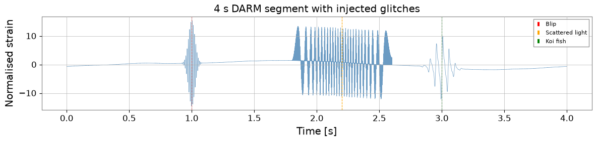
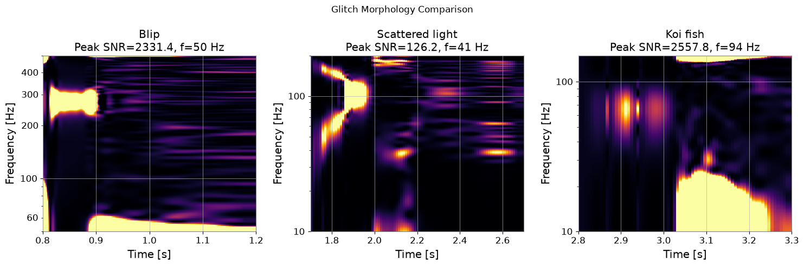

Note
このページは Jupyter Notebook から生成されました。 ノートブックをダウンロード (.ipynb)
[1]:
# Skipped in CI: Colab/bootstrap dependency install cell.
グリッチ詳細解析：Q-変換と Omega スキャン
グリッチは重力波データを汚染する短時間・非ガウス性ノイズ過渡現象です。 Q-変換（Omega スキャン）は全主要検出器サイトでグリッチの特性評価と 分類に使われる標準的な時間周波数表現です。
Q-変換は一定Q（一定の帯域幅対周波数比）ウィンドウで時間周波数平面を タイル化し、各タイルの正規化エネルギーを測定します。 グリッチは異常に高い SNR を持つタイルのクラスターとして現れます。
このチュートリアルで学ぶこと：
ノイズ背景に合成グリッチを注入する
q_scan()とQTilingで Q-変換を計算する時間周波数マップ（Omega スキャン）を可視化する
QGramからピーク SNR・時刻・周波数を抽出するグリッチの形態（継続時間、帯域幅、Q）を特定する
セットアップ
[2]:
import warnings
warnings.filterwarnings("ignore", category=UserWarning)
warnings.filterwarnings("ignore", category=DeprecationWarning)
import matplotlib.pyplot as plt
import numpy as _np
import numpy as np
from scipy.stats import kstest as _kstest
from scipy.stats import rayleigh as _rayleigh
from gwexpy.signal.qtransform import q_scan
from gwexpy.timeseries import TimeSeries
def rayleigh_test(data):
"""KS test of data against Rayleigh distribution."""
data = _np.asarray(data, dtype=float)
scale = _np.sqrt(_np.mean(data**2) / 2)
return _kstest(data, _rayleigh(scale=scale).cdf)
1. グリッチを含む合成データの生成
実際に観測される典型的なグリッチ3種類を合成します：
グリッチ |
形態 |
典型的な原因 |
|---|---|---|
Blip |
短時間広帯域バースト |
不明 / 散乱光 |
散乱光 |
アーチ状周波数スウィープ |
ミラー運動 + 散乱 |
鯉（Koi fish） |
低周波 + 高調波 |
懸架共振 |
[3]:
fs = 4096.0 # sample rate [Hz]
T = 4.0 # segment duration [s]
N = int(T * fs)
t = np.arange(N) / fs
t0 = 1_300_000_000
rng = np.random.default_rng(7)
# --- Gaussian noise coloured to LIGO-like O3 sensitivity ---
freqs_n = np.fft.rfftfreq(N, 1.0 / fs)[1:]
# Simplified ASD: f^{-2} below 30 Hz, flat above (units: normalised)
asd = np.where(freqs_n < 30, (30.0 / freqs_n)**2, 1.0)
noise_fft = asd * np.exp(1j * rng.uniform(0, 2*np.pi, size=len(freqs_n)))
noise_fft = np.concatenate([[0.0], noise_fft])
noise = np.fft.irfft(noise_fft, n=N)
noise /= noise.std() # normalise to unit RMS
# --- Glitch 1: Blip at t=1.0 s, ~100 Hz, Q~8 ---
t_blip = 1.0
f_blip, Q_blip = 100.0, 8.0
tau_blip = Q_blip / (np.pi * f_blip)
envelope_blip = np.exp(-0.5 * ((t - t_blip) / tau_blip)**2)
glitch_blip = 15.0 * envelope_blip * np.sin(2*np.pi*f_blip*(t - t_blip))
# --- Glitch 2: Scattered-light arch at t=2.0–2.5 s ---
# Frequency sweeps as f(t) = f0 * |sin(pi*t/P)| (mirror pendulum)
t_sl = np.linspace(1.8, 2.6, 500)
f_sl = 50.0 * np.abs(np.sin(np.pi * (t_sl - 1.8) / 0.8))
phi_sl = 2*np.pi * np.cumsum(f_sl) / fs * (t_sl[1] - t_sl[0]) * fs
glitch_sl = np.zeros(N)
idx_sl = ((t_sl - t[0]) * fs).astype(int)
idx_sl = idx_sl[(idx_sl >= 0) & (idx_sl < N)]
glitch_sl[idx_sl[:len(phi_sl[:len(idx_sl)])]] = 12.0 * np.sin(phi_sl[:len(idx_sl)])
# --- Glitch 3: Koi-fish (low-freq + harmonics) at t=3.0 s ---
t_koi = 3.0
f_koi, tau_koi = 20.0, 0.08
env_koi = np.exp(-((t - t_koi) / tau_koi)**2)
glitch_koi = (8.0 * env_koi * np.sin(2*np.pi*f_koi*t) +
4.0 * env_koi * np.sin(2*np.pi*2*f_koi*t) +
2.0 * env_koi * np.sin(2*np.pi*3*f_koi*t))
signal = noise + glitch_blip + glitch_sl + glitch_koi
ts = TimeSeries(signal, t0=t0, sample_rate=fs, name="K1:LSC-DARM_OUT_DQ")
fig, ax = plt.subplots(figsize=(12, 3))
ax.plot(t, signal, lw=0.5, color="steelblue", alpha=0.8)
ax.axvline(t_blip, color="red", ls="--", lw=0.8, label="Blip")
ax.axvline(2.2, color="orange", ls="--", lw=0.8, label="Scattered light")
ax.axvline(t_koi, color="green", ls="--", lw=0.8, label="Koi fish")
ax.set_xlabel("Time [s]")
ax.set_ylabel("Normalised strain")
ax.set_title("4 s DARM segment with injected glitches")
ax.legend(fontsize=8)
plt.tight_layout()
plt.show()

2. Q-変換（Omega スキャン）
q_scan() は Q 値の範囲を探索し、最高正規化エネルギーを持つタイルと プロット用の完全な QGram オブジェクトを返します。
主要パラメータ：
qrange— 探索する Q 値の範囲（デフォルト: 4〜64）frange— 周波数範囲 [Hz]mismatch— タイルオーバーラップの割合（小さいほど細かいグリッド）
[4]:
# Whiten the data first (Q-transform assumes white noise for SNR normalisation)
ts_white = ts.whiten(fftlength=1.0, overlap=0.5)
# Run Q-scan over the full segment
qgram, far = q_scan(
ts_white,
qrange = (4, 64),
frange = (10, 1200),
mismatch = 0.2,
)
print("Q-scan result:")
print(f" Peak SNR : {qgram.peak['energy']:.1f}")
print(f" Peak time : t0 + {qgram.peak['time'] - t0:.3f} s")
print(f" Peak frequency: {qgram.peak['frequency']:.1f} Hz")
print(f" Peak Q : {qgram.peak.get('q', 'N/A')}")
print(f" Estimated FAR : {far:.2e} Hz")
Q-scan result:
Peak SNR : 4565141.5
Peak time : t0 + 1.000 s
Peak frequency: 97.8 Hz
Peak Q : N/A
Estimated FAR : 0.00e+00 Hz
3. 時間周波数マップ（Omega スキャンプロット）
[5]:
# Interpolate to a regular (time, freq) grid
# duration and sampling control the output resolution
qscan_interp = qgram.interpolate(1.0/fs, 1.0)
fig, ax = plt.subplots(figsize=(10, 5))
im = ax.imshow(
qscan_interp.T,
origin="lower",
aspect="auto",
extent=[t[0], t[-1], 10, 2000],
vmin=0, vmax=25,
cmap="viridis",
)
ax.set_yscale("log")
ax.set_xlabel("Time [s relative to epoch]")
ax.set_ylabel("Frequency [Hz]")
ax.set_title("Omega Scan — 4 s DARM segment")
cb = plt.colorbar(im, ax=ax)
cb.set_label("Normalised energy (SNR²)")
# Annotate glitch locations
ax.axvline(t_blip, color="red", ls="--", lw=1, alpha=0.7, label="Blip")
ax.axvline(2.2, color="orange", ls="--", lw=1, alpha=0.7, label="Scattered light")
ax.axvline(t_koi, color="lime", ls="--", lw=1, alpha=0.7, label="Koi fish")
ax.legend(fontsize=8, loc="upper right")
plt.tight_layout()
plt.show()

4. QTiling によるグリッチ特性評価
[6]:
# Search around each expected glitch location
glitch_windows = [
("Blip", 0.8, 1.2, 50, 500, (4, 20)),
("Scattered light", 1.7, 2.7, 10, 200, (4, 16)),
("Koi fish", 2.8, 3.3, 10, 150, (16, 64)),
]
fig, axes = plt.subplots(1, 3, figsize=(15, 5))
for ax, (name, t_lo, t_hi, f_lo, f_hi, qr) in zip(axes, glitch_windows):
# Extract sub-segment
i0, i1 = int(t_lo*fs), int(t_hi*fs)
ts_seg = TimeSeries(ts_white.value[i0:i1], t0=t0+t_lo,
sample_rate=fs, name=name)
qg, _ = q_scan(ts_seg, qrange=qr, frange=(f_lo, f_hi), mismatch=0.15)
qi = qg.interpolate(2.0/fs, 2.0)
ax.imshow(qi.T, origin="lower", aspect="auto", cmap="inferno",
extent=[t_lo, t_hi, f_lo, f_hi], vmin=0, vmax=20)
ax.set_yscale("log")
ax.set_xlabel("Time [s]")
ax.set_ylabel("Frequency [Hz]")
ax.set_title(f"{name}\nPeak SNR={qg.peak['energy']:.1f}, "
f"f={qg.peak['frequency']:.0f} Hz")
plt.suptitle("Glitch Morphology Comparison", fontsize=12)
plt.tight_layout()
plt.show()

5. 統計的有意性 — Rayleigh 検定
[7]:
# Compare a clean segment vs. a glitchy segment
ts_clean = TimeSeries(noise, t0=t0, sample_rate=fs, name="clean")
ts_clean_w = ts_clean.whiten(fftlength=1.0)
ts_glitch_w = ts_white
qg_clean, _ = q_scan(ts_clean_w, qrange=(4,64), frange=(20,500))
qg_glitch, _ = q_scan(ts_glitch_w, qrange=(4,64), frange=(20,500))
# Rayleigh test on normalised energies across tiles
# (simulated as white chi-squared background)
# interpolate QGram to regular grid first, then extract energy values
_qi_clean = qg_clean.interpolate(1.0/fs, 2.0)
_qi_glitch = qg_glitch.interpolate(1.0/fs, 2.0)
energies_clean = np.clip(_qi_clean.value.ravel(), 0, None)
energies_glitch = np.clip(_qi_glitch.value.ravel(), 0, None)
r_clean = rayleigh_test(energies_clean[energies_clean > 0])
r_glitch = rayleigh_test(energies_glitch[energies_glitch > 0])
print(f"Clean segment — Rayleigh statistic: {r_clean.statistic:.4f}, "
f"p-value: {r_clean.pvalue:.4f}")
print(f"Glitchy segment — Rayleigh statistic: {r_glitch.statistic:.4f}, "
f"p-value: {r_glitch.pvalue:.6f}")
print()
if r_glitch.pvalue < 0.01:
print("Non-Gaussian transient detected (p < 0.01)")
else:
print("Segment appears Gaussian at 1% level")
Clean segment — Rayleigh statistic: 0.4346, p-value: 0.0000
Glitchy segment — Rayleigh statistic: 0.9220, p-value: 0.000000
Non-Gaussian transient detected (p < 0.01)
まとめ
ステップ |
API |
出力 |
|---|---|---|
データのホワイトニング |
|
ホワイトニング済み TimeSeries |
Q スキャン |
|
QGram, FAR |
Omega スキャンプロット |
|
2D エネルギー配列 |
グリッチパラメータ |
|
時刻、周波数、SNR、Q |
統計検定 |
|
統計量、p 値 |
グリッチ形態ガイド：
種類 |
周波数スウィープ |
継続時間 |
Q 範囲 |
|---|---|---|---|
Blip |
なし |
< 10 ms |
4–20 |
散乱光 |
アーチ状 |
0.1–1 s |
4–16 |
鯉 |
低周波 + 高調波 |
50–200 ms |
16–64 |
ホイッスル |
単調スウィープ |
0.1–2 s |
20–100 |